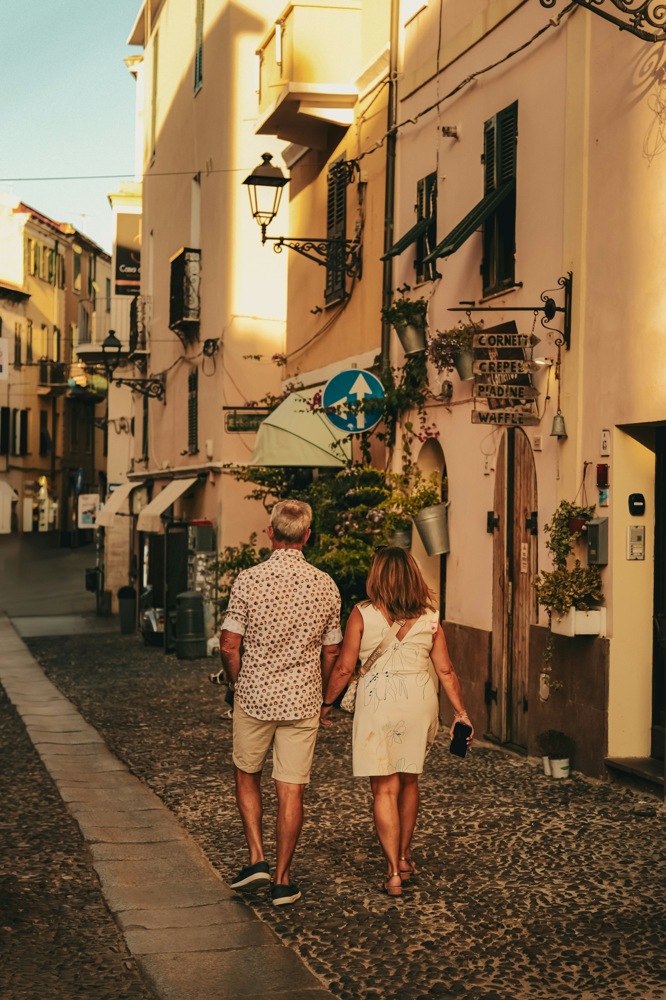
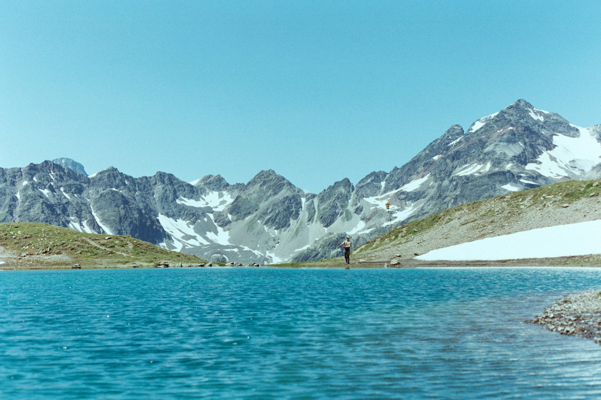
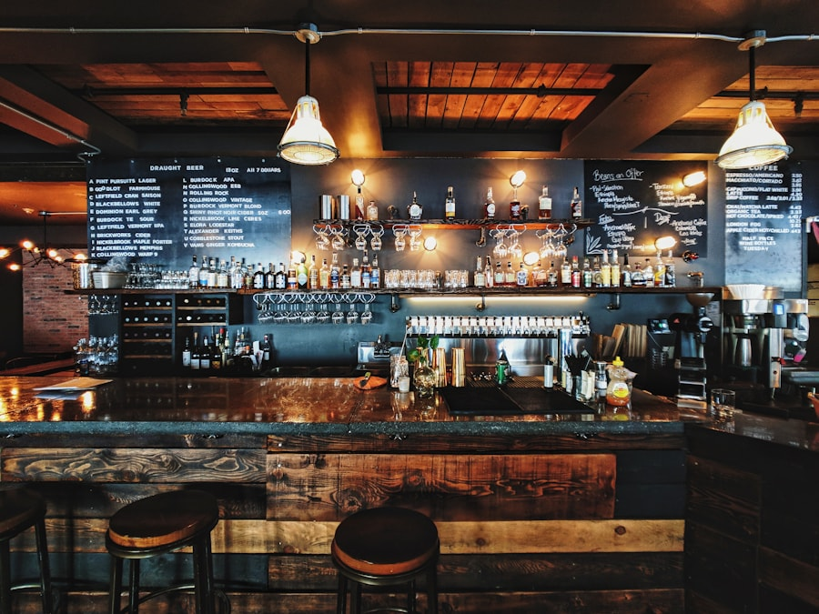
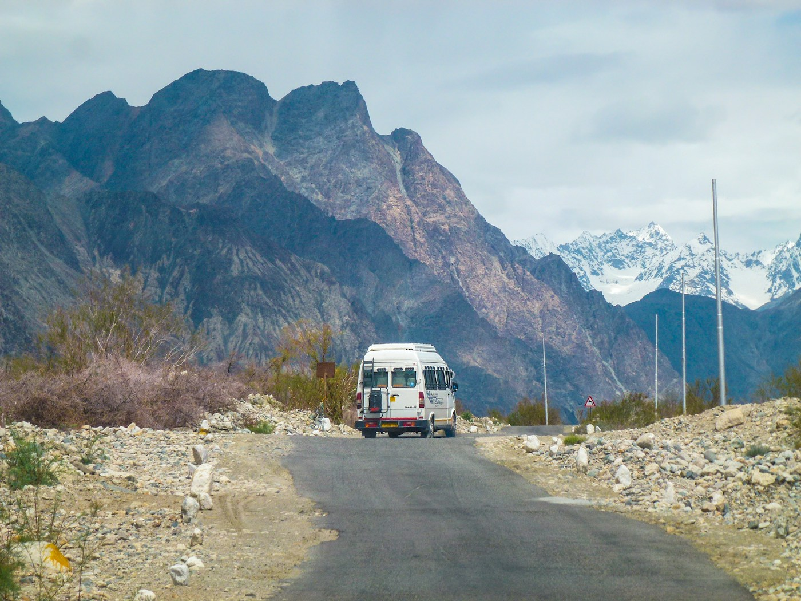
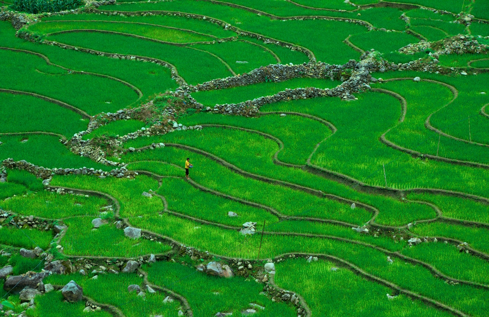
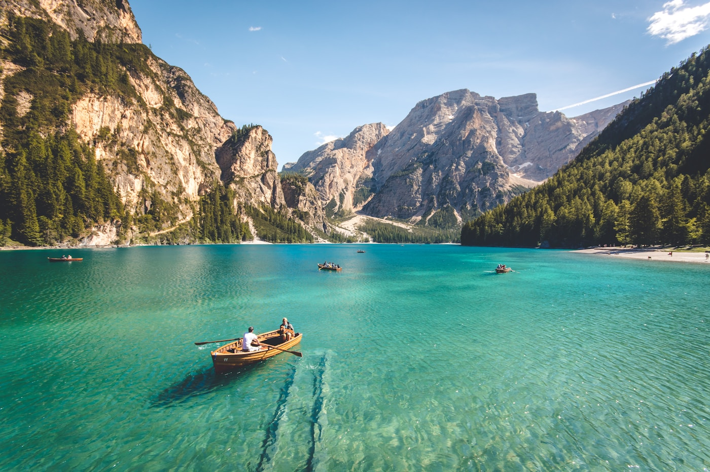

Too much travel
feels the same.
Most trips follow the same routes, same listings, and same experiences. It leaves travelers disappointed and cities overlooked.
Simple travel, built around trusted people who live in the city.

Most trips follow the same routes, same listings, and same experiences. It leaves travelers disappointed and cities overlooked.
We believe the best travel comes from real conversations with real people who know their city.
Visitors get more relevant, personal experiences. Locals earn fairly and share their city on their own terms.

We want people to arrive somewhere new and feel closer to the people, culture, and everyday life around them. Local Link is built to make travel more human while giving the people who live in a city a meaningful place in the experience.

A city is more than attractions and itineraries. The people who live there are what give it character.

Some travelers want an hour of help. Others want a local throughout their trip. The experience should adapt to the traveler, not the other way around.

Visitors should have a better experience, while locals have a fair way to earn, share their knowledge, and participate on their own terms.
Feel more confident, connected, and comfortable in unfamiliar cities.
Earn from the knowledge, culture, language, and experience they already have.
Keep more travel spending within neighborhoods and independent communities.
Launch in a few cities, learn quickly, and prove that trusted connections create better trips for visitors and more opportunities for locals.
Grow a diverse network of locals who reflect the real character of their cities and are empowered to help on their own terms.
Build tools and support that make it easy to connect, communicate, and plan with clarity on both sides.
Redefine how travel works: more human, more local, and more sustainable for the places we all love.
